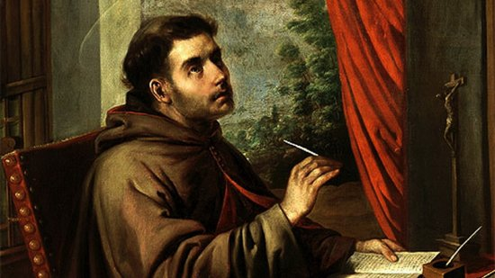

"SÃO BOAVENTURA"

"MINISTRO GERAL DOS FRANCISCANOS. CONSIDERADO O SEGUNDO FUNDADOR DA ORDEM FRANCISCANA"
=ÍNDICE=
- SEGUNDO FUNDADOR FRANCISCANO
- UM MAGNÍFICO E SANTO HOMEM
- SUAS OBRAS - SALMOS
- FOTOGRAFIAS + INFORMAÇÕES + E-MAIL


 -
SEGUNDO FUNDADOR FRANCISCANO-
FOTOGRAFIAS + INFORMAÇÕES + E-MAIL
-
SEGUNDO FUNDADOR FRANCISCANO-
FOTOGRAFIAS + INFORMAÇÕES + E-MAIL